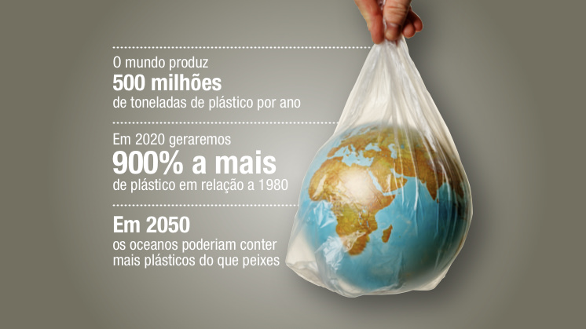

Como reduzir o consumo de plástico
Reduza o seu consumo de plástico e atenue seu impacto no meio ambiente
A invasão dos plásticos no nosso planeta é uma realidade. Basta lembrarmos que a ilha de resíduos plásticos que flutua no oceano Pacífico já tem 1,6 milhões de km2. Se queremos preservar o planeta, chegou a hora de cada um nós agir.
O plástico se converteu numa presença constante nas nossas vidas. Está em todas as partes: embalagens de produtos, ingredientes de cosméticos, materiais têxteis, celulares, etc. Inclusive no chiclete que você pode estar mascando neste mesmo momento! A sua onipresença é tão grande que o mero fato de tentar deixar de usá-lo pode ser uma tarefa muito difícil para muitas pessoas. Portanto, para reduzir o consumo de plásticos é preciso mais do que uma mudança de hábitos, também é necessário mudar nossa mentalidade.
Os plásticos, um problema global
O fato de que cada vez mais governos propõem medidas para paliar seu impacto sobre o meio ambiente demonstra que os plásticos se tornaram um quebra-cabeça para o planeta. Para não ir mais longe, a Europa proibirá em 2021 a venda em seu território de plásticos de um só uso como canudinhos, talheres ou cotonetes. Para termos ideia da dimensão do problema, vejamos alguns dados objetivos:
- Anualmente são produzidas 500 bilhões de garrafas de plástico no mundo.*
- Em 2020 geraremos mais de 500 milhões de toneladas de plástico, 900% a mais do que em 1980.*
- Já há mais de 150 milhões de toneladas de resíduos plásticos nos oceanos.**
- Em 2050, os oceanos poderiam conter mais plásticos do que peixes.***
- Cada ano acabam nos mares e oceanos aproximadamente oito milhões de toneladas de plástico.*
Os plásticos de um só uso (que são a metade do plástico que utilizamos por ano) têm uma vida útil média de 12 a 15 minutos mas podem demorar até 500 anos para desaparecer, segundo a empresa Life Out Of Plastic (LOOP). O plástico sobreviverá a nós e nossos filhos. A boa notícia é que está nas nossas mãos, pois somos consumidores: podemos reverter esta situação. Temos o poder de conseguir que os fabricantes mudem sua forma de produzir. Como? Modificando a nossa forma de consumir.
Para maiores informações click aqui
POR QUE É IMPORTANTE REDUZIR A PRODUÇÃO DE PLÁSTICO NA FONTE?
Estudo publicado em 2020 citado pela Oceana fez uma avaliação do lixo encontrado na costa brasileira e constatou que 70% dos resíduos coletados em limpezas de praia no litoral brasileiro são plásticos, principalmente embalagens.
O Brasil produz cerca de sete milhões de toneladas de plástico por ano, quantidade que coloca o país na posição de maior produtor da América Latina. Desse montante, três milhões de toneladas são de plásticos de uso único colocados no mercado, como embalagens e produtos descartáveis (copos, talheres e sacolas plásticas). Esse total equivale a aproximadamente 500 bilhões de itens por ano, ou 15 mil itens por segundo.
Essa poluição causa diversos problemas para centenas de espécies marinhas, além de trazer riscos à saúde humana pela ingestão de microplásticos.
QUAIS SÃO OS IMPACTOS PARA A VIDA MARINHA?
Centenas de espécies marinhas estão morrendo por causa do plástico seja por ingestão, sufocamento ou emaranhamento.
- No Brasil, foram necropsiados mais de 3,7 mil animais necropsiados, somente na região Sudeste e Sul do país, e 50% deles ingeriram plástico;
- Um em cada dez animais que ingere plástico vem a óbito;
- 85% dos indivíduos que ingeriram resíduos sólidos, inclusive plástico, são espécies ameaçadas de extinção.
Para maiores informações click aqui
O mutirão “Praia Limpa Caraguá”

O mutirão “Praia Limpa Caraguá” retirou 80,360 quilos de lixo e microlixo da praia Martim de Sá, no último sábado (13). A ação, que tem como objetivo a preservação ambiental e incentivar a participação da comunidade, ocorreu no trecho entre o quiosque do Nelsinho e o Rio Guaxinduba, das 8h às 10h.
A iniciativa foi realizada pela Secretaria de Meio Ambiente, Agricultura e Pesca de Caraguatatuba, em parceria com a LAVIMAR (Liga Acadêmica de Vida Marinha) da Universidade do Vale do Paraíba (Univap), ONG Guardião da Costeira, Electra e Quiosque do Nelsinho.
A ação também contou com a participação da comunidade. Os voluntários receberam luvas e sacos de lixo que foram fornecidos pela organização.
A mobilização faz parte da comemoração ao “Dia Mundial da Limpeza”, celebrado neste ano no dia 20 de setembro.
Para maiores informações click aqui